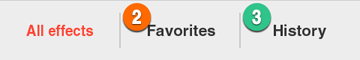
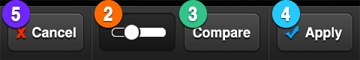

3.  Preset
Preset
(1) FX studio : You can choose preset among 200 FX effect and apply variety of effect to your photo with a single tap.
FX studio : You can choose preset among 200 FX effect and apply variety of effect to your photo with a single tap.

200 FX preset are categorized into 10 themes. If you choose a theme, you can check out a list of presets.


(Preset list screen)
If you press ①Star(☆)on each preset tap, the preset will be added to ②Favorite. You can add maximum 30 preset to favorite.
On ③History, 20 FX presets you recently applied will be listed automatically.
※ If the maximum number of Favorite and History list is over, the latest added or applied preset will be automatically listed.
If you choose a FX preset, the effect will be applied and you can check this out on the FX screen.


(FX screen)
With ①Control slider on the bottom of the FX Screen, the opacity of effect can be controlled in real time.
If you press ②Controller Toggle Button, Control slider will disappear and you can check the entire view of a photo.
③Compare button will help you compare the before-and-after application of effect.
④Apply button will save a photo with the preset and then you will go to the main screen.
⑤Cancel button will discharge preset effect and then you will go to the main screen.
※ Functions of the bottom tap are same in all pages
※ By swiping left/right, you are able to check the previous or next effects
⑥FX button of left top will call the Preset list screen.
With ⑦Time Matrix of right top, you will have more fun with applying FX preset. Detailed explanation will be followed below.
(2) Time Matrix : Travel time with photos through Time Matrix!
Time Matrix : Travel time with photos through Time Matrix!

Time Matrix is the function that recommends effect of a particular time’s atmosphere.
With ①Time Slider on right side you can travel time by year. When the time is set, Time Matrix will show you ②three FX presets according to the time.
The recommended three presets changes every time.
Once a preset among them is chosen, you will move to the FX screen.
On this page, effect’s opacity can be controlled and applied same as on other pages.
If you tap Time Matrix , you will move back to Time Matrix.
, you will move back to Time Matrix.